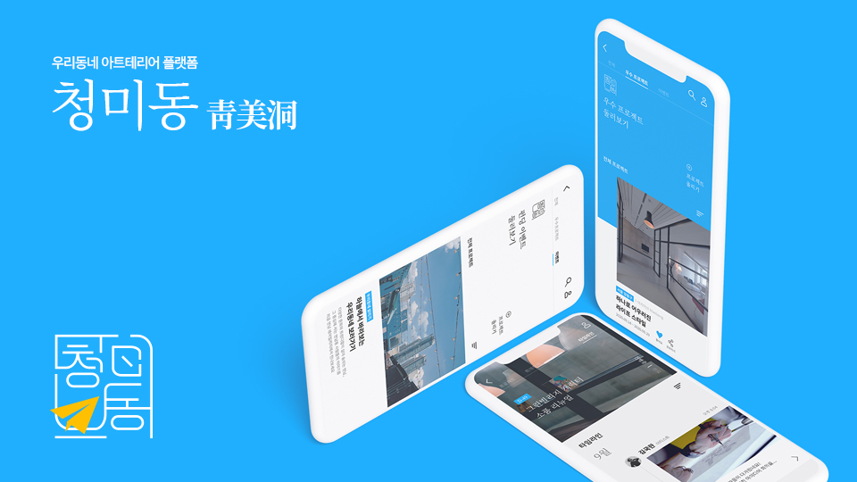
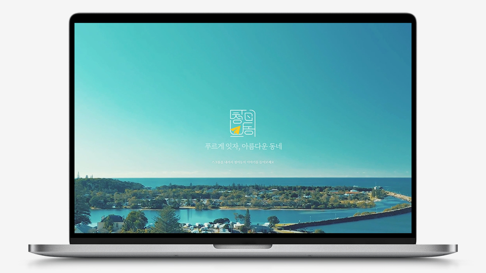

CHEONGMI-DONG

APP, WEB

2020년 11월 제작한 우리동네 아트테리어 플랫폼 청미동靑美洞의 애플리케이션 디자인과 프로모션 웹사이트입니다.
5명이 한 팀으로 이루어진 이 프로젝트는 계원예술대학교에서의 2년을 마무리하는 졸업작품 프로젝트로 졸업작품심사에서 학과 우수작을 수상하였습니다. 저는 프로젝트 팀장과 애플리케이션 기획, 디자인 일부를 맡았으며 프로모션 웹사이트 퍼블리싱 전체를 맡았습니다.

웹에서 잘 쓰이지 않는 명조체를 사용하고 한국적인 배경을 페이지 곳곳에 배치하면서 청미동의 디자인 키워드인 창의, 소통, 한국미를 웹사이트를 통해서도 보여줄 수 있도록 고민하고 실현했습니다.
애플리케이션 프로토타입을 직접 조작할 수 있는 느낌을 부여하기 위한 인터랙션 작업들을 거쳐 완성했습니다.

청미동 靑美洞APP, WEB
#
HTML CSS JAVASCRIPT JQUERY
PHOTOSHOP XD
우리동네 아트테리어 플랫폼, 청미동靑美洞CHEONGMI-DONG 은 2020년 11월 프로젝트 스튜디오 02 과목으로 진행한 계원예술대학교 2020 졸업전시회 졸업작품 프로젝트입니다. 코로나19로 인한 소상공인과 아티스트의 어려움을 해소하고자 서울시에서 기존에 실시한 아트테리어 사업의 문제점을 보완하고 이를 모바일 플랫폼으로 구현하여 소상공인, 아티스트, 지역주민이 함께 로컬 문화를 주도해 갈 수 있도록 하는 서비스입니다. 기획, 디자인을 거쳐 프로모션 웹사이트를 제작했습니다. 청미동 프로젝트는 2020 졸업작품심사에서 학과 우수작, PT 우수작에 선정되었습니다.
#